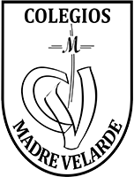

Education
2023: Postgraduate course in Full-Stack Web Technologies at Universitat Politècnica de Catalunya School.

2019 - 2020: MSc in Bioinformatics at Universitat Autònoma de Barcelona, Barcelona, Spain.

2015 - 2019: 4-year Degree in Genetics at Universitat Autònoma de Barcelona, Barcelona, Spain.
2013 - 2015: High School Diploma, specializing in Sciences at El Pinar school, Sant Cugat del Vallès, Barcelona, Spain.
Research activity
29, 30, 31 March 2021: Ancient Biomolecules of Plants, Animals, and Microbes (virtual conference) I presented a poster with the preliminary results of the ancient dog project under the title “Dog demographic history in Europe: from the Neolithic to the Middle Age”.
2020: “Ancient dog DNA analysis”. Project carried out within the Academic Internship Program as part of my masters.
2018: “Comparative analysis of human polymorphic inversions in mammals” Project carried out within the Academic Internship Program as part of my degree.